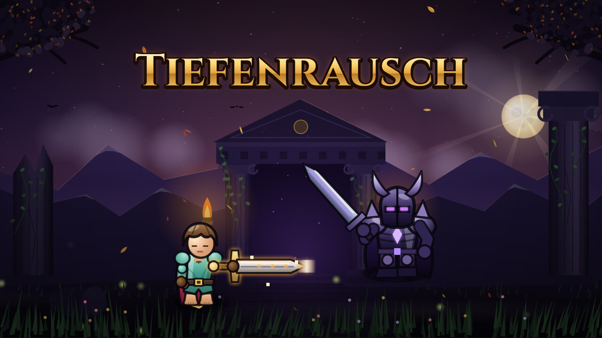

🎬 Tiefenrausch – Videos
So speicherst du ein Video auf dem iPad:1. Auf „⬇ Speichern“ tippen.
2. Das Video öffnet sich. Unten/oben auf das Teilen-Symbol (Quadrat mit Pfeil) tippen.
3. „Video sichern“ wählen → es liegt in der Fotos-App.
Bilder: lange auf das Bild drücken → „Zu Fotos hinzufügen“.
Titel und Beschreibungen zum Kopieren: youtube.md
🖼️ Hintergrundbilder
Vorschaubild für Videos (1280×720)

⬇ SpeichernClip: Kosmische Waffe
Short: Ebene 1 gegen Ebene 100
Short: Endlos-Chaos ab Ebene 60
Short: Alle Seltenheiten
Short: Tageslauf
Short: Truhen-Glück
Short: Tiefenrausch
Trailer